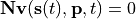

Steady State Analysis¶
The dynamics of a biochemical network is described by the system equation
where  is the vector of species concentrations,
is the vector of species concentrations,  is a vector of time independent parameters, and
is a vector of time independent parameters, and  is time. The steady state is the solution to
the network equations when all the rates of change are zero. That is the concentrations of the floating
species, that satisfy:
is time. The steady state is the solution to
the network equations when all the rates of change are zero. That is the concentrations of the floating
species, that satisfy:

The steady state is easily calculated using the steady state method:
>>> rr.steadyState()
1.234567E-9
The call to steadyState returns a value that represents the sum of squares of the rates of change. Therefore the
smaller this value the more likely the steady state solution has been found. Often a value less that 10E-6 indicates
a steady state has been found. After a successful call all the species levels will be at their steady state values.
Steady state values can be obtained using getSteadyStateValues() and steadyStateSelections() can be used to
decide what values to return. For example the following would retrieve a single value:
>>> rr.steadyStateSelections = ['S1']
>>> rr.getSteadyStateValues()
array([ 0.54314239])
One important element in running steady state analysis is the concept of moiety conservation. If the model in question contains moiety conserved cycles, traditional approach to obtain steady state solution fails as it is impossible to calculate the inverse of Jacobian. In such case, we use a walkaround and split the species in a cycle into groups. To do this in RoadRunner, type:
>>> rr.conservedMoietyAnalysis = True
Currently, RoadRunner only support nleq1 solver for performing steady state analysis. This will be expanded in the future, and we included framework to select different solvers for steady state analysis. To set the solver and see all settings, type:
>>> rr.setSteadyStateSolver('nleq')
>>> solver = rr.getSteadyStateSolver()
>>> solver.settingsPyDictRepr()
"'maximum_iterations': 100, 'minimum_damping': 1e-16, 'relative_tolerance': 0.0001"
To see all available steady state solvers, type:
>>> rr.getRegisteredSteadyStateSolverNames()
('nleq',)
The following methods deal with steady state analysis: